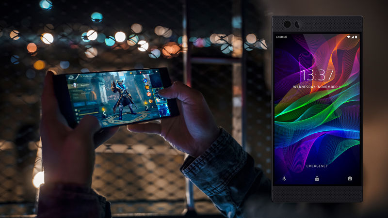
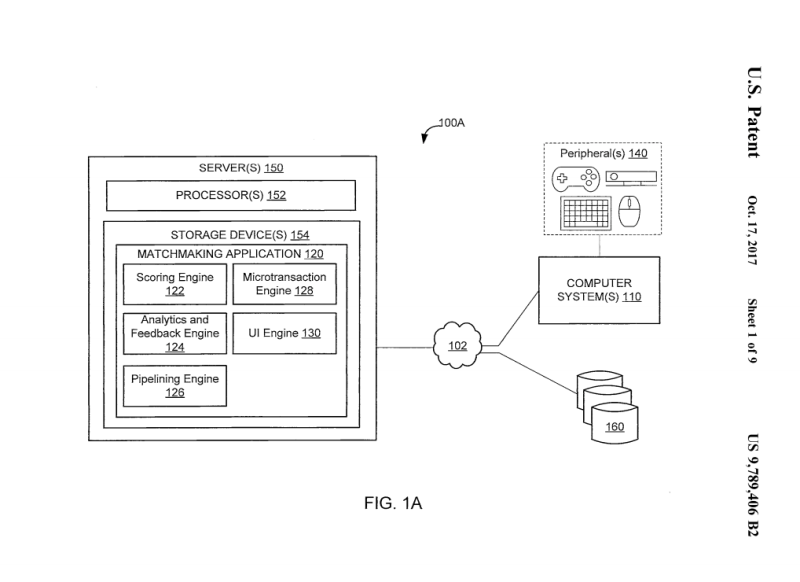

Der Prim3blog bringt euch die wichtigsten Nachrichten rund ums Thema Videospiele!
Übersicht über alle Webseiten
Der Hersteller für Spielezubehör Razor entwickelt nun ein Smartphone für Videospiele
Artikel vom 01.11.2017

Foto vom Razor Smartphone
Jetzt wo Razer damit fertig ist, sich einen Namen bei von PC- und Konsolenspielen zu machen, richtet der Hersteller seine Aufmerksamkeit auf den mobilen Markt.
Das 700 Dollar teure Razer Phone wurde am 17. November eingeführt und verfügt über einen Qualcomm Snapdragon 835 Chip, 8 Gigabyte RAM und das weltweit erste 120-Hz-UltraMotion-Display.
Das Smartphonespiel Candy Crush wird darauf so gut laufen wie noch nie zuvor!
Spielepublisher Electronic Arts schließt das Spielenentwicklerstudio Viceral Games
Artikel vom 25.10.2017
Wallpaper vom Spiel Deadspace 2
Der Spielerpublisher Electronic Arts (EA) schlicht das Etnwicklerstudio Visceral Games, das Studio hinter Spielen wie Battlefield Hardline und Dead Space, wurde heute offiziel verkündet.
Das Star Wars-Spiel, das bei Visceral in Entwicklung ist, wird überarbeitet und von einem anderen Studio weiterentwickelt, sagt EA, obwohl es jetzt stark von der aktuellen Version des Spiels unterscheiden wird.
Activision patentiert ein Matchmakingsystem was Spieler dazu ermuttigt Microtransaktions zu nutzen
Artikel vom 18.10.2017

bildliche Darstellung von der Idee zum Patent
Ein Patent, das Activision erteilt wurde, umreißt ein neues Multiplayer-Matchmaking-System, das Spieler miteinander verbindet, um Mikrotransaktionen zu fördern.